UX-009 · Coherencia de soporte
Fixture con componentes y estilos reales; registro y navegación simulados. Los contactos son valores de prueba, no contactos de producción.
Informe técnico390 px · light · inicio
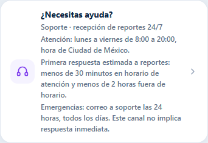
390 px · light · soporte
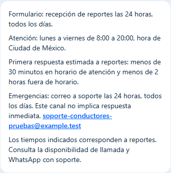
390 px · light · confirmacion
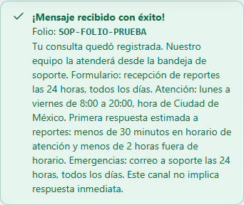
390 px · light · incidencia
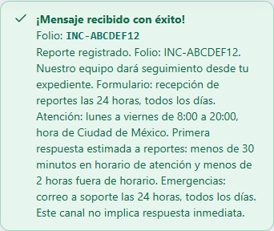
390 px · dark · inicio
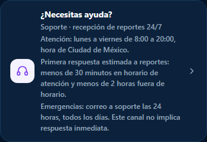
390 px · dark · soporte
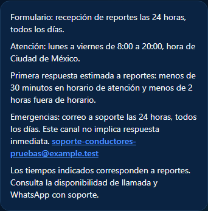
390 px · dark · confirmacion
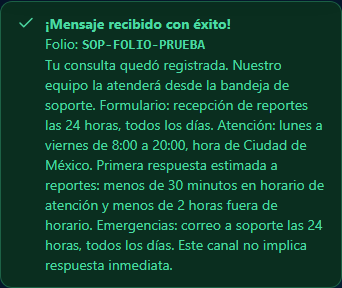
390 px · dark · incidencia
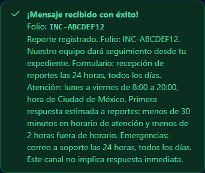
1440 px · light · inicio
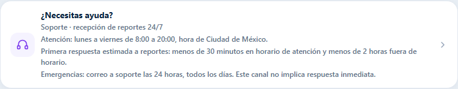
1440 px · light · soporte
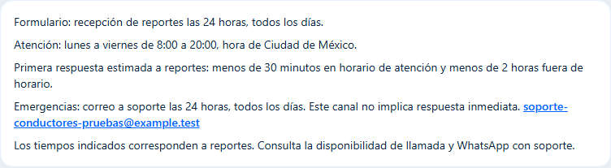
1440 px · light · confirmacion
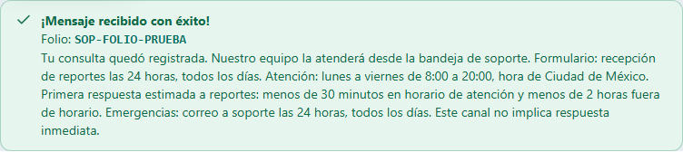
1440 px · light · incidencia
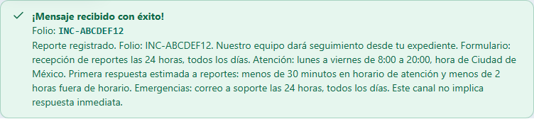
1440 px · dark · inicio
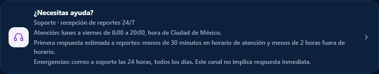
1440 px · dark · soporte
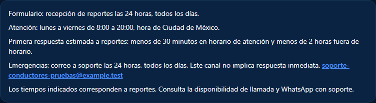
1440 px · dark · confirmacion
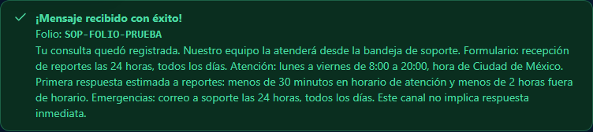
1440 px · dark · incidencia
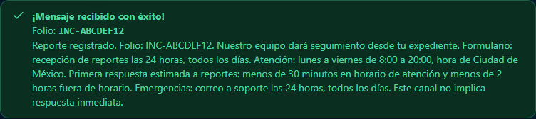